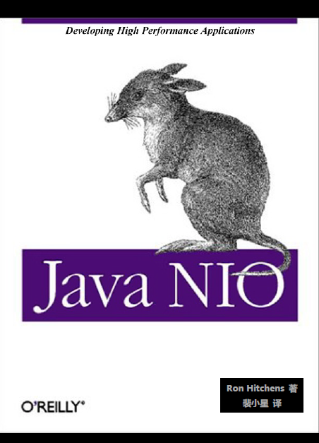
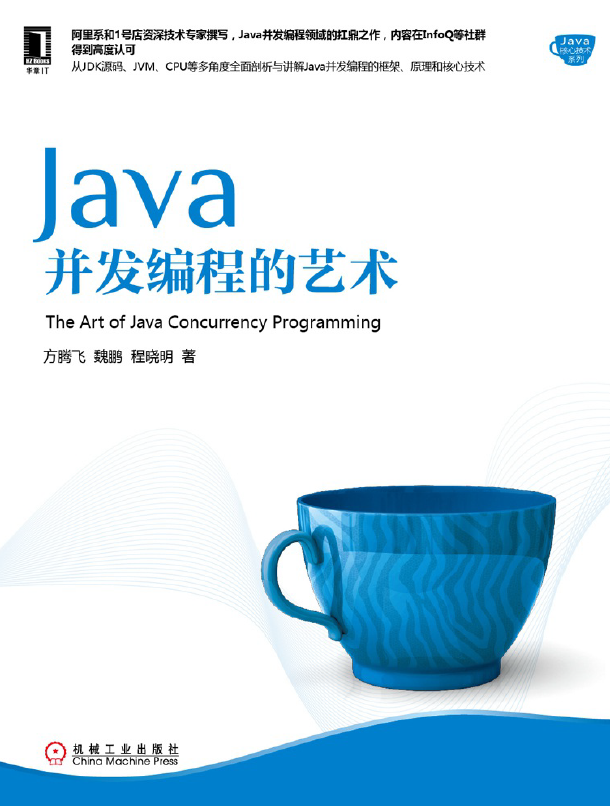
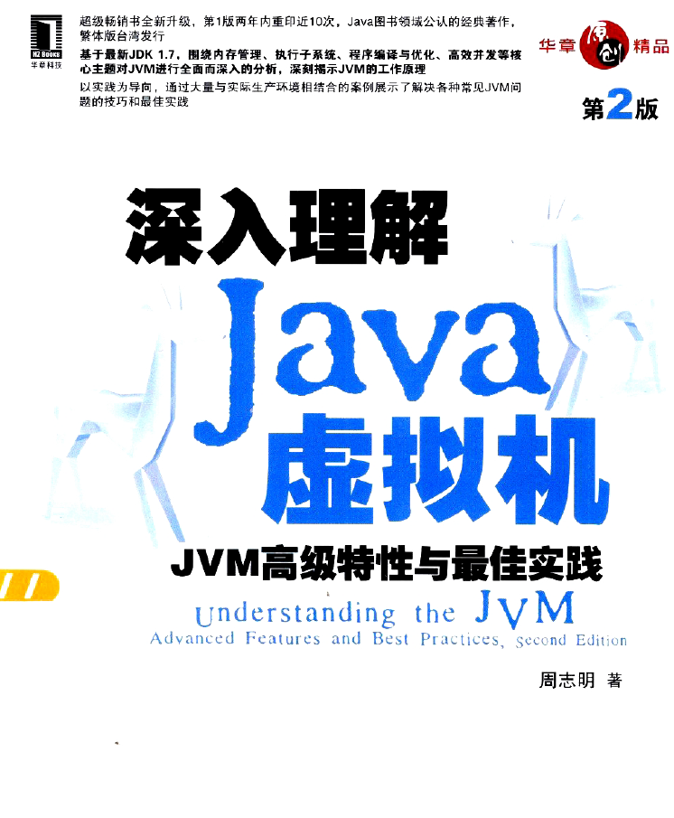
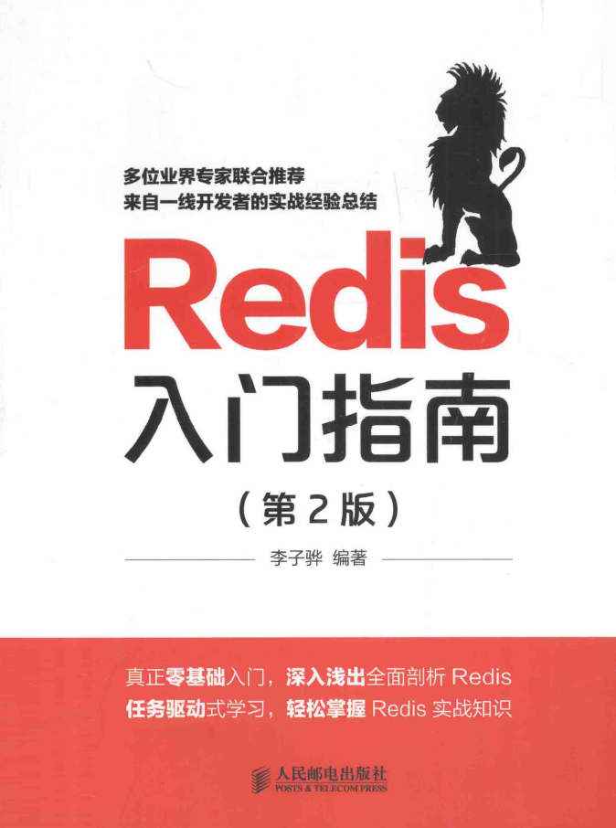
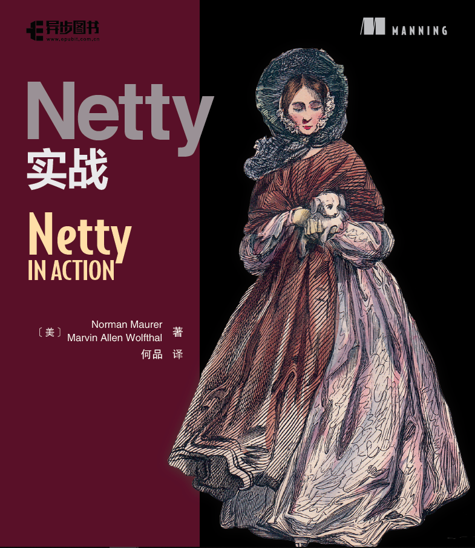
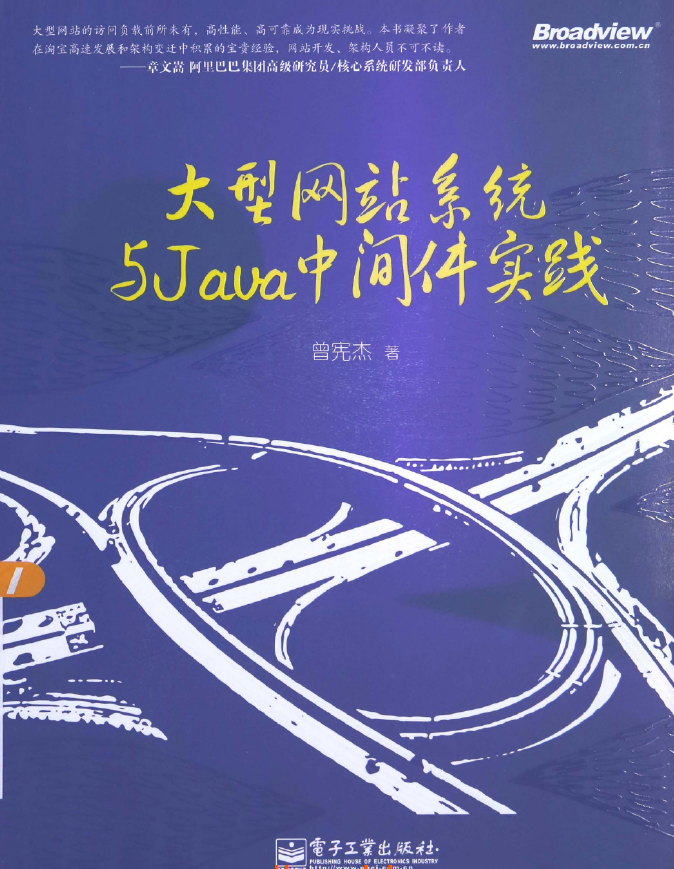
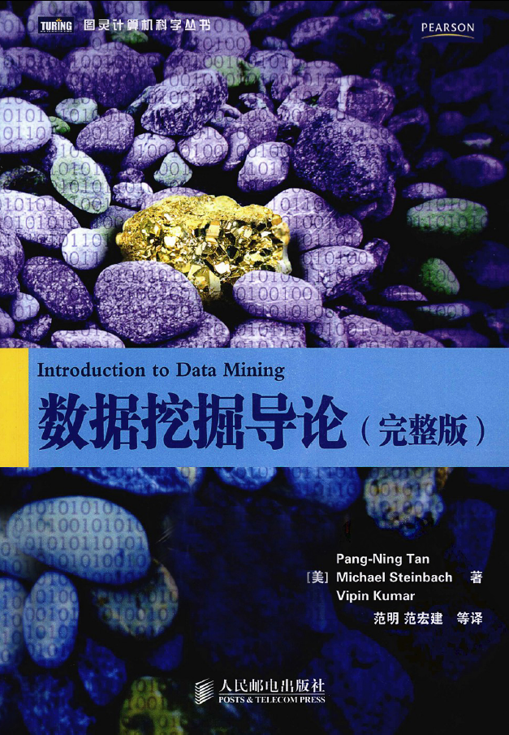

<!DOCTYPE html>


  <html class="light page-post">


<head><meta name="generator" content="Hexo 3.8.0">
  <meta charset="utf-8">
  
  <title>看过认为好的书 | 胡思旺</title>

  <meta name="viewport" content="width=device-width, initial-scale=1, maximum-scale=1">

  
    <meta name="keywords" content="全栈,微服务,Java,Netty,Vue,机器学习,Python">
  

  <meta name="description" content="看过认为好的书1.JavaNIO     图书&amp;nbsp;&amp;nbsp;下载链接     2.Java并发编程的艺术     图书&amp;nbsp;&amp;nbsp;下载链接     3.深入理解Java虚拟机 JVM高级特性与最佳实践     图书&amp;nbsp;&amp;nbsp;下载链接     4.Redis入门指南     图书&amp;nbsp;&amp;nbsp;下载链接     5.Netty实战     图书&amp;nbsp;">
<meta property="og:type" content="article">
<meta property="og:title" content="看过认为好的书">
<meta property="og:url" content="http://yoursite.com/2018/11/30/看过认为好的书/index.html">
<meta property="og:site_name" content="胡思旺">
<meta property="og:description" content="看过认为好的书1.JavaNIO     图书&amp;nbsp;&amp;nbsp;下载链接     2.Java并发编程的艺术     图书&amp;nbsp;&amp;nbsp;下载链接     3.深入理解Java虚拟机 JVM高级特性与最佳实践     图书&amp;nbsp;&amp;nbsp;下载链接     4.Redis入门指南     图书&amp;nbsp;&amp;nbsp;下载链接     5.Netty实战     图书&amp;nbsp;">
<meta property="og:locale" content="default">
<meta property="og:image" content="http://yoursite.com/2018/11/30/看过认为好的书/pp1.PNG">
<meta property="og:image" content="http://yoursite.com/2018/11/30/看过认为好的书/pp2.PNG">
<meta property="og:image" content="http://yoursite.com/2018/11/30/看过认为好的书/pp3.PNG">
<meta property="og:image" content="http://yoursite.com/2018/11/30/看过认为好的书/pp4.PNG">
<meta property="og:image" content="http://yoursite.com/2018/11/30/看过认为好的书/pp5.PNG">
<meta property="og:image" content="http://yoursite.com/2018/11/30/看过认为好的书/pp6.PNG">
<meta property="og:image" content="http://yoursite.com/2018/11/30/看过认为好的书/pp7.PNG">
<meta property="og:image" content="http://yoursite.com/2018/11/30/看过认为好的书/pp8.PNG">
<meta property="og:image" content="http://yoursite.com/2018/11/30/看过认为好的书/pp9.PNG">
<meta property="og:image" content="http://yoursite.com/2018/11/30/看过认为好的书/pp10.jpg">
<meta property="og:updated_time" content="2018-12-04T03:43:42.391Z">
<meta name="twitter:card" content="summary">
<meta name="twitter:title" content="看过认为好的书">
<meta name="twitter:description" content="看过认为好的书1.JavaNIO     图书&amp;nbsp;&amp;nbsp;下载链接     2.Java并发编程的艺术     图书&amp;nbsp;&amp;nbsp;下载链接     3.深入理解Java虚拟机 JVM高级特性与最佳实践     图书&amp;nbsp;&amp;nbsp;下载链接     4.Redis入门指南     图书&amp;nbsp;&amp;nbsp;下载链接     5.Netty实战     图书&amp;nbsp;">
<meta name="twitter:image" content="http://yoursite.com/2018/11/30/看过认为好的书/pp1.PNG">

  

  
    <link rel="icon" href="/favicon.ico">
  

  <link href="/css/styles.css?v=c114cben" rel="stylesheet">


  
    <link rel="stylesheet" href="/css/personal-style.css">
  

  

  
  <script type="text/javascript">
    var _hmt = _hmt || [];
    (function() {
      var hm = document.createElement("script");
      hm.src = "//hm.baidu.com/hm.js?57e94d016e201fba3603a8a2b0263af0";
      var s = document.getElementsByTagName("script")[0];
      s.parentNode.insertBefore(hm, s);
    })();
  </script>


  
  <script type="text/javascript">
	(function(){
	    var bp = document.createElement('script');
	    var curProtocol = window.location.protocol.split(':')[0];
	    if (curProtocol === 'https') {
	        bp.src = 'https://zz.bdstatic.com/linksubmit/push.js';        
	    }
	    else {
	        bp.src = 'http://push.zhanzhang.baidu.com/push.js';
	    }
	    var s = document.getElementsByTagName("script")[0];
	    s.parentNode.insertBefore(bp, s);
	})();
  </script>


  

</head>
</html>
<body>


  
    <span id="toolbox-mobile" class="toolbox-mobile">盒子</span>
  

  <div class="post-header CENTER">
   
  <div class="toolbox">
    <a class="toolbox-entry" href="/">
      <span class="toolbox-entry-text">盒子</span>
      <i class="icon-angle-down"></i>
      <i class="icon-home"></i>
    </a>
    <ul class="list-toolbox">
      
        <li class="item-toolbox">
          <a class="CIRCLE" href="/archives/" rel="noopener noreferrer" target="_self">
            博客
          </a>
        </li>
      
        <li class="item-toolbox">
          <a class="CIRCLE" href="/project/" rel="noopener noreferrer" target="_self">
            项目
          </a>
        </li>
      
        <li class="item-toolbox">
          <a class="CIRCLE" href="/category/" rel="noopener noreferrer" target="_self">
            分类
          </a>
        </li>
      
        <li class="item-toolbox">
          <a class="CIRCLE" href="/search/" rel="noopener noreferrer" target="_self">
            搜索
          </a>
        </li>
      
        <li class="item-toolbox">
          <a class="CIRCLE" href="/about/" rel="noopener noreferrer" target="_self">
            联系
          </a>
        </li>
      
    </ul>
  </div>


</div>


  <div id="toc" class="toc-article">
    <strong class="toc-title">文章目录</strong>
    <ol class="toc"><li class="toc-item toc-level-1"><a class="toc-link" href="#看过认为好的书"><span class="toc-text">看过认为好的书</span></a><ol class="toc-child"><li class="toc-item toc-level-2"><a class="toc-link" href="#1-JavaNIO"><span class="toc-text">1.JavaNIO</span></a></li><li class="toc-item toc-level-2"><a class="toc-link" href="#2-Java并发编程的艺术"><span class="toc-text">2.Java并发编程的艺术</span></a></li><li class="toc-item toc-level-2"><a class="toc-link" href="#3-深入理解Java虚拟机-JVM高级特性与最佳实践"><span class="toc-text">3.深入理解Java虚拟机 JVM高级特性与最佳实践</span></a></li><li class="toc-item toc-level-2"><a class="toc-link" href="#4-Redis入门指南"><span class="toc-text">4.Redis入门指南</span></a></li><li class="toc-item toc-level-2"><a class="toc-link" href="#5-Netty实战"><span class="toc-text">5.Netty实战</span></a></li><li class="toc-item toc-level-2"><a class="toc-link" href="#6-大型网站系统与Java中间件实践"><span class="toc-text">6.大型网站系统与Java中间件实践</span></a></li><li class="toc-item toc-level-2"><a class="toc-link" href="#7-深入理解Spring-Cloud与微服务构建"><span class="toc-text">7.深入理解Spring Cloud与微服务构建</span></a></li><li class="toc-item toc-level-2"><a class="toc-link" href="#8-数据挖掘导论"><span class="toc-text">8.数据挖掘导论</span></a></li><li class="toc-item toc-level-2"><a class="toc-link" href="#9-统计学习方法"><span class="toc-text">9.统计学习方法</span></a></li><li class="toc-item toc-level-2"><a class="toc-link" href="#10-机器学习"><span class="toc-text">10.机器学习</span></a></li></ol></li></ol>
  </div>


<div class="content content-post CENTER">
   <article id="post-看过认为好的书" class="article article-type-post" itemprop="blogPost">
  <header class="article-header">
    <h1 class="post-title">看过认为好的书</h1>

    <div class="article-meta">
      <span>
        <i class="icon-calendar"></i>
        <span>2018.11.30</span>
      </span>

      
        <span class="article-author">
          <i class="icon-user"></i>
          <span>siwang.hu</span>
        </span>
      

      
  <span class="article-category">
    <i class="icon-list"></i>
    <a class="article-category-link" href="/categories/随笔/">随笔</a>
  </span>


      
        <span>
          <i class="icon-comment"></i>
          <a href="http://www.github.com/siwanghu/2018/11/30/看过认为好的书/#disqus_thread"></a>
        </span>
      

      
      
    </div>
  </header>

  <div class="article-content">
    
      <h1 id="看过认为好的书"><a href="#看过认为好的书" class="headerlink" title="看过认为好的书"></a>看过认为好的书</h1><h2 id="1-JavaNIO"><a href="#1-JavaNIO" class="headerlink" title="1.JavaNIO"></a>1.JavaNIO</h2><blockquote>
<p>  </p>
<ul>
<li>图书&nbsp;&nbsp;<a href="https://pan.baidu.com/s/1ZxON-I1fP5AsD3pdcikSiw" target="_blank" rel="noopener">下载链接</a>  </li>
</ul>
</blockquote>
<h2 id="2-Java并发编程的艺术"><a href="#2-Java并发编程的艺术" class="headerlink" title="2.Java并发编程的艺术"></a>2.Java并发编程的艺术</h2><blockquote>
<p>  </p>
<ul>
<li>图书&nbsp;&nbsp;<a href="https://pan.baidu.com/s/11j5bFRRH1NRD6BgVWcH5-Q" target="_blank" rel="noopener">下载链接</a>  </li>
</ul>
</blockquote>
<h2 id="3-深入理解Java虚拟机-JVM高级特性与最佳实践"><a href="#3-深入理解Java虚拟机-JVM高级特性与最佳实践" class="headerlink" title="3.深入理解Java虚拟机 JVM高级特性与最佳实践"></a>3.深入理解Java虚拟机 JVM高级特性与最佳实践</h2><blockquote>
<p>  </p>
<ul>
<li>图书&nbsp;&nbsp;<a href="https://pan.baidu.com/s/1HVjYhKZ_-YOpK6iUqkEpsQ" target="_blank" rel="noopener">下载链接</a>  </li>
</ul>
</blockquote>
<h2 id="4-Redis入门指南"><a href="#4-Redis入门指南" class="headerlink" title="4.Redis入门指南"></a>4.Redis入门指南</h2><blockquote>
<p>  </p>
<ul>
<li>图书&nbsp;&nbsp;<a href="https://pan.baidu.com/s/1Z86G5EnFObCfyCxF_MhsCQ" target="_blank" rel="noopener">下载链接</a>  </li>
</ul>
</blockquote>
<h2 id="5-Netty实战"><a href="#5-Netty实战" class="headerlink" title="5.Netty实战"></a>5.Netty实战</h2><blockquote>
<p>  </p>
<ul>
<li>图书&nbsp;&nbsp;<a href="https://pan.baidu.com/s/1URcnizy4H0LXLNFj-LG4zg" target="_blank" rel="noopener">下载链接</a>  </li>
</ul>
</blockquote>
<h2 id="6-大型网站系统与Java中间件实践"><a href="#6-大型网站系统与Java中间件实践" class="headerlink" title="6.大型网站系统与Java中间件实践"></a>6.大型网站系统与Java中间件实践</h2><blockquote>
<p>  </p>
<ul>
<li>图书&nbsp;&nbsp;<a href="https://pan.baidu.com/s/1DMohm8pOlycaLw6jxZWXQw" target="_blank" rel="noopener">下载链接</a>  </li>
</ul>
</blockquote>
<h2 id="7-深入理解Spring-Cloud与微服务构建"><a href="#7-深入理解Spring-Cloud与微服务构建" class="headerlink" title="7.深入理解Spring Cloud与微服务构建"></a>7.深入理解Spring Cloud与微服务构建</h2><blockquote>
<p>  </p>
<ul>
<li>图书&nbsp;&nbsp;<a href="https://pan.baidu.com/s/1b-8URGBdwh-FATr3xGL9iw" target="_blank" rel="noopener">下载链接</a>  </li>
</ul>
</blockquote>
<h2 id="8-数据挖掘导论"><a href="#8-数据挖掘导论" class="headerlink" title="8.数据挖掘导论"></a>8.数据挖掘导论</h2><blockquote>
<p>  </p>
<ul>
<li>图书&nbsp;&nbsp;<a href="https://pan.baidu.com/s/11TrtxfTbj0Ndt3QfnKmlPA" target="_blank" rel="noopener">下载链接</a>  </li>
</ul>
</blockquote>
<h2 id="9-统计学习方法"><a href="#9-统计学习方法" class="headerlink" title="9.统计学习方法"></a>9.统计学习方法</h2><blockquote>
<p>  </p>
<ul>
<li>图书&nbsp;&nbsp;<a href="https://pan.baidu.com/s/1EjdslVQlGafLIRiI70UQew" target="_blank" rel="noopener">下载链接</a>  </li>
</ul>
</blockquote>
<h2 id="10-机器学习"><a href="#10-机器学习" class="headerlink" title="10.机器学习"></a>10.机器学习</h2><blockquote>
<p>  </p>
<ul>
<li>图书&nbsp;&nbsp;<a href="https://pan.baidu.com/s/1ffWA4mw71D5H1vR31YttKQ" target="_blank" rel="noopener">下载链接</a>  </li>
</ul>
</blockquote>

    
  </div>

</article>


   
  <div class="text-center donation">
    <div class="inner-donation">
      <span class="btn-donation">支持一下</span>
      <div class="donation-body">
        <div class="tip text-center">扫一扫，支持胡思旺</div>
        <ul>
        
          <li class="item">
            
              <span>微信扫一扫</span>
            
            
          </li>
        
          <li class="item">
            
              <span>支付宝扫一扫</span>
            
            
          </li>
        
        </ul>
      </div>
    </div>
  </div>


   
  <div class="box-prev-next clearfix">
    <a class="show pull-left" href="/2018/11/16/vue基础笔记/">
        <i class="icon icon-angle-left"></i>
    </a>
    <a class="show pull-right" href="/2018/12/05/java反射笔记/">
        <i class="icon icon-angle-right"></i>
    </a>
  </div>


   
      <div class="git"></div>
   
</div>


  <a id="backTop" class="back-top">
    <i class="icon-angle-up"></i>
  </a>


  <div class="modal" id="modal">
  <span id="cover" class="cover hide"></span>
  <div id="modal-dialog" class="modal-dialog hide-dialog">
    <div class="modal-header">
      <span id="close" class="btn-close">关闭</span>
    </div>
    <hr>
    <div class="modal-body">
      <ul class="list-toolbox">
        
          <li class="item-toolbox">
            <a class="CIRCLE" href="/archives/" rel="noopener noreferrer" target="_self">
              博客
            </a>
          </li>
        
          <li class="item-toolbox">
            <a class="CIRCLE" href="/project/" rel="noopener noreferrer" target="_self">
              项目
            </a>
          </li>
        
          <li class="item-toolbox">
            <a class="CIRCLE" href="/category/" rel="noopener noreferrer" target="_self">
              分类
            </a>
          </li>
        
          <li class="item-toolbox">
            <a class="CIRCLE" href="/search/" rel="noopener noreferrer" target="_self">
              搜索
            </a>
          </li>
        
          <li class="item-toolbox">
            <a class="CIRCLE" href="/about/" rel="noopener noreferrer" target="_self">
              联系
            </a>
          </li>
        
      </ul>

    </div>
  </div>
</div>


  
      <div class="fexo-comments comments-post">
    
  <section class="disqus-comments">
    <div id="disqus_thread">
      <noscript>Please enable JavaScript to view the <a href="//disqus.com/?ref_noscript">comments powered by Disqus.</a></noscript>
    </div>
  </section>

  <script>
    var disqus_shortname = 'forsigner';
    
    var disqus_url = 'http://yoursite.com/2018/11/30/看过认为好的书/';
    
    (function(){
      var dsq = document.createElement('script');
      dsq.type = 'text/javascript';
      dsq.async = true;
      dsq.src = '//' + disqus_shortname + '.disqus.com/embed.js';
      (document.getElementsByTagName('head')[0] || document.getElementsByTagName('body')[0]).appendChild(dsq);
    })();
  </script>

  <script id="dsq-count-scr" src="//forsigner.disqus.com/count.js" async></script>


    

    
    

    

    
    

  </div>

  

  <script type="text/javascript">
  function loadScript(url, callback) {
    var script = document.createElement('script')
    script.type = 'text/javascript';

    if (script.readyState) { //IE
      script.onreadystatechange = function() {
        if (script.readyState == 'loaded' ||
          script.readyState == 'complete') {
          script.onreadystatechange = null;
          callback();
        }
      };
    } else { //Others
      script.onload = function() {
        callback();
      };
    }

    script.src = url;
    document.getElementsByTagName('head')[0].appendChild(script);
  }

  window.onload = function() {
    loadScript('/js/bundle.js?235683', function() {
      // load success
    });
  }
</script>

</body>
</html>
